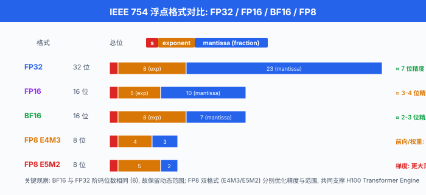
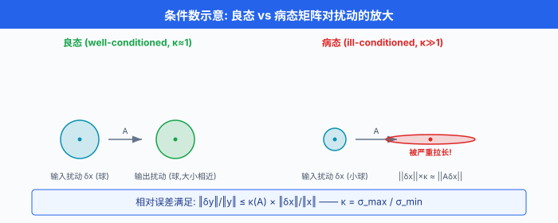
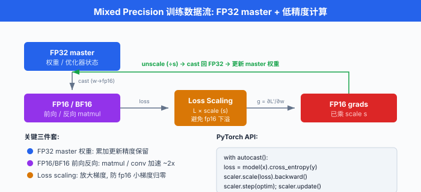

浮点与数值稳定性¶
一句话总结：计算机里没有实数，只有近似的浮点数；每一次矩阵乘法都在悄悄丢有效数字，而条件数、稳定性和 mixed precision 就是我们与这层近似打交道的语言。
🗺️ 本章导览¶
- 本章覆盖数值分析与凸优化，是对第 03 章优化的深度补遗
- 01. 浮点与数值稳定性 (本节): IEEE 754、条件数、灾难性抵消、DL 数值实战
- 02. 迭代法与稀疏线代: CG、GMRES、Krylov 子空间、稀疏矩阵存储
- 03. 凸集与凸函数：凸性判定、保凸运算、强凸性、Lipschitz
- 04. 对偶与 KKT：拉格朗日对偶、KKT 条件、SVM 对偶
- 05. 二阶方法: Newton、BFGS/L-BFGS、K-FAC、Shampoo
- 06. 内点法与约束优化：障碍法、primal-dual、CVXPY 实战
- 07. 分布式与随机优化: SGD variants、ZeRO、adaptive method 收敛性
把训练过程想成一场跨国长途接力赛。 每一次矩阵乘法是一次交棒，每一次交棒都有一层薄薄的"擦伤" —— 有效数字被磨掉一点点。 单看一次微不足道，累计几十亿次就可能让 loss 直接爆成 NaN. 这一节讲的就是这层擦伤到底长什么样，什么时候能忽略，什么时候会要命.
-
假设你写了一个看起来毫无破绽的 Python 表达式：
0.1 + 0.2. 你期待得到0.3，但 Python 会告诉你0.30000000000000004. 这不是解释器 bug，是浮点数 (floating-point) 的宿命。 计算机的内存是有限位数的，而 \(\tfrac{1}{10}\) 在二进制下是无限循环小数 —— 一如 \(\tfrac{1}{3}\) 在十进制里是 \(0.333\ldots\) -
这种"看不见的近似"藏在你写的每一行数值代码里。 大部分时候它无关紧要，但在大规模训练、病态矩阵、深度网络梯度累积这三个场景，它会突然从背景音跳出来变成主角。 从 ResNet 训练梯度爆炸到 LLM 用 BF16 而不敢用 FP16，每一次工程决策背后都是数值稳定性问题。
-
更宽的一句话：数值分析研究的是"用有限精度算连续数学"这件事本身. 从 1947 年 Turing 的 rounding error 论文，到 1963 年 Wilkinson 的 backward error analysis，到 1985 年 IEEE 754 落地，再到 2018 年 mixed precision training 与 2022 年 FP8，这门学科每一次进化都是被硬件与工程需求推着走。 本节的目标是让你既能读懂 Higham 的经典教材，也能看懂 PyTorch AMP 的源码。
IEEE 754：浮点数的通用语言¶
-
现代硬件几乎全部遵循 IEEE 754 标准 (最新版本是 IEEE 754-2019). 它规定了浮点数在内存里的比特布局、舍入规则、特殊值 (Inf / NaN) 的语义。 没有这个标准，你在 Nvidia GPU 上跑的模型换到 AMD 或 CPU 上，结果都可能对不上。
-
一个浮点数由三段比特组成:
- 这个式子在说：一个符号位 \(s\) 决定正负；\(e\) 是阶码 (biased exponent) —— 存储值减去 bias 得到真实指数；\(m\) 是尾数，前面还有一个隐含 1 位 (implicit leading 1)，也就是尾数默认是 \(1.\text{xxx}\) 而不是 \(0.\text{xxx}\). 这一位不占内存但省了一 bit 精度。
主流精度格式对照¶
| 格式 | 总位数 | 符号位 | 阶码位 | 尾数位 | Bias | 动态范围 | 有效精度 (十进制) |
|---|---|---|---|---|---|---|---|
| FP64 (double) | 64 | 1 | 11 | 52 | 1023 | \(\sim 10^{\pm 308}\) | 约 15-17 位 |
| FP32 (single) | 32 | 1 | 8 | 23 | 127 | \(\sim 10^{\pm 38}\) | 约 6-9 位 |
| FP16 (half) | 16 | 1 | 5 | 10 | 15 | \(\sim 6.55 \times 10^4\) | 约 3-4 位 |
| BF16 (bfloat16) | 16 | 1 | 8 | 7 | 127 | \(\sim 10^{\pm 38}\) | 约 2-3 位 |
| FP8 E4M3 | 8 | 1 | 4 | 3 | 7 | \(\sim \pm 448\) | 约 1-2 位 |
| FP8 E5M2 | 8 | 1 | 5 | 2 | 15 | \(\sim \pm 5.7 \times 10^4\) | 约 1 位 |
-
注意到 BF16 与 FP32 阶码位数相同，都是 8 位。 这意味着 BF16 保留了 FP32 的动态范围，只是牺牲尾数精度。 谷歌为 TPU 设计 BF16 时就是这个意图：深度学习梯度的分布跨越十几个数量级，动态范围比小数点后几位重要得多。
-
FP8 有两种变体: E4M3 (4 位阶码，3 位尾数) 用于前向和权重，因为需要更高精度；E5M2 (5 位阶码，2 位尾数) 用于梯度，因为梯度跨的量级更大。 Nvidia H100 的 Transformer Engine 就是围绕这两种 FP8 设计的。
-
除了正常数，浮点标准还定义了三类特殊值:
- 零 (zero)：阶码全 0，尾数全 0. 有
+0和-0两个 —— 它们参与比较时+0 == -0为真，但1/(+0) = +inf而1/(-0) = -inf. 大部分场景不用管，但涉及取导数时能踩坑。 - 次正规数 (denormal / subnormal)：阶码全 0，尾数非零。 这时隐含位变成 0 而不是 1，表示的数非常接近 0. 好处是让 0 附近有更平滑的表示 (gradual underflow)；坏处是许多硬件对 denormal 计算慢十几倍 (所以 GPU 上常见的 flush-to-zero, FTZ 模式，直接把 denormal 舍入为 0 换取速度).
- 无穷 (infinity)：阶码全 1，尾数全 0. 出现在溢出时，例如 \(\text{FP16}\) 里 \(10^5\).
Inf参与运算的规则：Inf + 1 = Inf,Inf - Inf = NaN,0 * Inf = NaN. -
非数 (NaN)：阶码全 1，尾数非零。 出现在 \(0/0\), \(\infty - \infty\), \(\sqrt{-1}\). NaN 有个恶心的性质：NaN != NaN，也就是自己不等于自己。 这是检测 NaN 的常用技巧 (
x != x判 NaN，或 PyTorch 的torch.isnan). -
动态范围与"表示上限"的直觉: FP16 的最大正常数约 \(6.55 \times 10^4\)，意味着如果你的激活值达到 \(10^5\) (未归一化时很常见)，就会溢出成 Inf，一路传染到 loss 变 NaN. 这就是 FP16 需要 BatchNorm / LayerNorm 强制把激活拉回小范围的原因；用 BF16 就没这个问题，因为它能表示到 \(10^{38}\).

舍入误差：每次运算的隐形税¶
-
浮点数的集合是离散的：相邻两个能被精确表示的数之间，有一段"表示不了"的空档。 任何落入空档的实数，硬件都要舍入 (round) 到最近的可表示数。 IEEE 754 默认的舍入规则是 round-to-nearest-even (最近偶数舍入)，目的是消除长期累积的偏移。
-
定义 \(\text{fl}(x)\) 为"把实数 \(x\) 舍入到浮点表示" 的操作。 那么对任意基础运算 (加减乘除、开方) \(\odot\)，都有:
- 这个式子读作：硬件算出的 \(x \odot y\) 相对真值的相对误差被 \(u\) 控制。 这里的 \(u\) 叫 单位舍入 (unit roundoff)，它等于机器精度 (machine epsilon) 的一半:
-
其中 \(p\) 是尾数位数 (含隐含 1 位). 对 FP32, \(p = 24\)，因此 \(u = 2^{-24} \approx 5.96 \times 10^{-8}\). 对 FP64, \(u = 2^{-53} \approx 1.11 \times 10^{-16}\). 一次运算的相对误差不超过 \(u\) —— 这是浮点算术的基本承诺。
-
机器精度 \(\epsilon_M\) 的另一种直观定义：满足 \(1 + \epsilon_M > 1\) 在浮点数里成立的最小正数。 比 \(\epsilon_M\) 更小的加数，加到 1 上根本"看不见".
# Python 里查机器精度
import numpy as np
print(np.finfo(np.float32).eps) # 1.1920929e-07 (这是 ε_M, 不是 u)
print(np.finfo(np.float64).eps) # 2.220446049250313e-16
print(np.finfo(np.float16).eps) # 0.000977 (~10^-3, 只有 3 位十进制精度)
# 直接观察
x = np.float32(1.0)
eps = np.float32(1e-8)
print(x + eps == x) # True! 1e-8 加到 1 上被吞掉
eps2 = np.float32(1e-7)
print(x + eps2 == x) # False, 这个能看见
- 单次 \(u\) 级的误差看起来微不足道，但积累起来能变得吓人。 一个经典结果 (Higham 2002 定理 3.1): \(n\) 个浮点数求和，累计相对误差有上界
- 也就是"最坏情况下，累加 \(n\) 次误差线性增长". 对 FP32 而言，\(n = 10^7\) 次累加就能让相对误差达到 \(10^{-1}\) 量级。 这就是为什么大模型训练用 Kahan 补偿求和 或者干脆用 FP64 做梯度累加。
灾难性抵消：大数减大数的陷阱¶
-
灾难性抵消 (catastrophic cancellation) 是数值计算里最出名的坑之一。 当两个近似相等的大数相减，结果的有效位数会突然坍缩，因为高位全部抵消掉，只留下低位 —— 而低位本来就是舍入误差最集中的地方。
-
举个经典例子：计算 \(f(x) = \sqrt{x^2 + 1} - x\) 当 \(x\) 很大时。 数学上 \(x \to \infty\) 时 \(f(x) \to 0\)，但用哪种数值形式决定了你能不能算出正确的 0.
# catastrophic cancellation demo
import numpy as np
def naive(x):
return np.sqrt(x**2 + 1.0) - x
def stable(x):
# 恒等变形: 分子有理化
return 1.0 / (np.sqrt(x**2 + 1.0) + x)
for x in [1e3, 1e6, 1e8, 1e10]:
n = naive(np.float32(x))
s = stable(np.float32(x))
print(f"x={x:.0e} naive={n:.6e} stable={s:.6e} diff={abs(n-s):.2e}")
# 输出 (FP32):
# x=1e+03 naive=4.882812e-04 stable=5.000000e-04 diff=1.17e-05
# x=1e+06 naive=0.000000e+00 stable=5.000000e-07 diff=5.00e-07
# x=1e+08 naive=0.000000e+00 stable=5.000000e-09 diff=5.00e-09
# x=1e+10 naive=0.000000e+00 stable=5.000000e-11 diff=5.00e-11
-
分析：当 \(x = 10^6\) 时，\(x^2 + 1 \approx 10^{12}\)，加个 1 在 FP32 下完全被吞掉 (\(10^{12} \times u \approx 6 \times 10^4\)，远大于 1). 于是 \(\sqrt{x^2+1} = x\) 精确成立，相减为 0. 稳定形式则通过 \(\sqrt{x^2+1} + x \approx 2x\) 直接得到 \(1/(2x) = 5 \times 10^{-7}\)，完全正确。
-
一般的抵消误差公式：若我们计算 \(c = a - b\) 且 \(a, b\) 大致同号同量级，相对误差被放大为
-
分母 \(|a - b|\) 越小 (即抵消越严重)，相对误差被放大得越厉害。 这就是"catastrophic"的来源。
-
DL 里的经典抵消场景:
- Softmax 分母 \(\sum e^{z_i}\)，当 \(z_i\) 都很大时溢出到 \(\infty\)；都很小时下溢到 0. 稳定 softmax 就是解这个。
- 计算方差 \(\text{Var}(X) = \mathbb{E}[X^2] - (\mathbb{E}[X])^2\) 的"教科书公式"是抵消陷阱，Welford's online algorithm 才是数值稳的写法。
- 训练中 \(L_{\text{new}} - L_{\text{old}}\) 用 float 存的话，到后期 loss 平坦，这个差可能低于机器精度直接判 0.
- RoPE (rotary position embedding) 里的 \(\cos\theta\), \(\sin\theta\)，当序列极长 (100k tokens) 时 \(\theta\) 会累积到很大，若不用 double 精度算三角函数，位置编码在长上下文上会失真。
- Layer Normalisation 计算 \((x - \mu)^2\) 求方差，当 \(\mu \approx x\) 时也是抵消场景 (故 PyTorch 官方实现用 Welford).
条件数：问题本身有多"敏感"¶
-
有些数值问题，不管你用多好的算法，只要输入有一点扰动，输出就大幅度变. 这不是算法的错，是问题本身"病态". 衡量这种敏感度的指标就是条件数 (condition number).
-
对线性系统 \(Ax = b\)，条件数定义为:
-
用 2-范数 (最常见) 时，\(\kappa_2(A) = \sigma_{\max}(A) / \sigma_{\min}(A)\) —— 最大与最小奇异值之比。 \(\kappa = 1\) 时 (正交矩阵) 问题最"好", \(\kappa \to \infty\) 时问题"奇异"，完全不能解。
-
条件数直接控制误差放大比例。 若右端项 \(b\) 有扰动 \(\Delta b\)，解的相对误差满足:
-
这个式子读作：输入相对误差乘以 \(\kappa\) 就是输出相对误差的上界。 若 \(\kappa(A) = 10^8\)，而你的 \(b\) 只有 FP32 精度 (\(10^{-7}\))，那么解 \(x\) 的相对误差最坏可能到 \(10^1\) —— 也就是每一位有效数字都没了.
-
一个法则速记：用 FP32 (约 7 位十进制精度) 解线性系统，若 \(\kappa(A) \approx 10^k\)，那么解最多有 \(7 - k\) 位有效数字。 \(k > 7\) 时，你算了个寂寞。
Hilbert 矩阵：病态之王¶
- Hilbert 矩阵 \(H_n\) 定义为 \((H_n)_{ij} = 1/(i + j - 1)\)，是数值分析里的"坏矩阵"教科书例子:
- 它长得温良无害，但条件数增长得像火箭:
import numpy as np
from scipy.linalg import hilbert
for n in [4, 6, 8, 10, 12]:
H = hilbert(n)
kappa = np.linalg.cond(H)
print(f"n={n:2d} κ(H_n) = {kappa:.3e}")
# 输出:
# n= 4 κ(H_n) = 1.551e+04
# n= 6 κ(H_n) = 1.495e+07
# n= 8 κ(H_n) = 1.526e+10
# n=10 κ(H_n) = 1.602e+13
# n=12 κ(H_n) = 1.728e+16 ← 超过 FP64 精度上限了
-
\(n = 12\) 时 \(\kappa \approx 10^{16}\)，已经超过 FP64 的 \(u \approx 10^{-16}\) —— 意思是即使你用 double 精度存 \(H_{12}\)，输入自身的舍入误差就足以让求解结果完全无意义.
-
DL 语境：神经网络的 Hessian 常常极度病态 (\(\kappa \gg 10^{10}\))，这也是二阶方法 (Newton, K-FAC) 需要各种正则化和低秩近似的原因；单纯直接算 \(H^{-1}\) 会数值崩塌。

前向稳定 vs 后向稳定¶
-
一个算法把输入 \(x\) 变成输出 \(\hat y\)，而真实答案是 \(y = f(x)\). 有两个不同的"稳定"概念。
-
前向误差 (forward error)：直接看 \(\|\hat y - y\|\) —— 算出来的 vs 真的差多远。 越小越好。
-
后向误差 (backward error)：找一个"扰动的输入" \(\tilde x\)，使得 \(\hat y = f(\tilde x)\) 精确成立，然后看 \(\|\tilde x - x\|\) —— 我算出的结果，精确对应哪个稍微改动过的输入？越小越好。
-
用符号：若存在 \(\tilde x\) 满足 \(\hat y = f(\tilde x)\) 且
-
则算法叫 后向稳定 (backward stable). 这意味着"我们没算错这个问题的答案，只是不小心把问题微微改变了一点点".
-
关键联系 (Wilkinson 1963 的核心洞见):
-
用大白话讲：一个后向稳定的算法，若问题条件数好，前向精度就好；若问题病态，后向稳定也救不了你. 条件数是"翻译系数"，把后向误差翻译成前向误差。
-
这个观念上的转换在数值分析里非常重要。 大部分现代算法 (LU 分解、QR 分解、Householder 反射、Cholesky) 都能证明后向稳定. 拿到一个后向稳定的求解器，我们的注意力就应该从"算法有没有 bug"转向"问题本身好不好"—— 也就是 \(\kappa(A)\) 大不大。
-
反例警示: Gaussian elimination without pivoting (不选主元的高斯消元) 不是后向稳定的；加上 partial pivoting 才是。 LAPACK 的
dgesv用的就是 partial pivoting. -
一个具体例子：求解 $$ \begin{pmatrix} 10^{-20} & 1 \ 1 & 1 \end{pmatrix} x = \begin{pmatrix} 1 \ 2 \end{pmatrix} $$. 不选主元时消元产生 \(1 - 10^{20}\) 这样的抵消，结果崩坏；交换两行后 (选主元 = 把最大主元放到当前位置)，消元产生 \(1 - 10^{-20} \approx 1\)，后向误差恢复到 \(O(u)\).
-
实用启示:
- 拿到一个奇怪的数值结果，先问"问题的 \(\kappa\) 是多少?" 而不是"算法有没有 bug?"
- Deep learning 里的 Hessian、协方差矩阵、Fisher information 都是常常极度病态的对象。 直接求逆几乎注定失败，要用正则化 (加 \(\lambda I\)) 或者迭代方法 (下一节讲).
- PyTorch 的
torch.linalg.solve/torch.linalg.lstsq都是后向稳定的；但如果你的 \(A\) 病态，后向稳定救不了你，需要用torch.linalg.lstsq(A, b, rcond=...)或torch.linalg.pinv(A, rcond=...)，在奇异值截断处引入 regularisation.
深度学习里的数值坑¶
稳定 Softmax：减去最大值¶
- 教科书的 softmax 定义:
- 直接实现在 \(z_i\) 稍大时立刻爆炸。 FP32 里 \(e^{89}\) 已经溢出成 Inf；而 LLM logits 常常达到 20-30. 稳定的写法是先减掉最大值:
- 数学上恒等 (分子分母同乘 \(e^{-m}\))，但数值上大不同 —— 减完最大值后，所有指数的输入都 \(\le 0\), \(e^{z_i - m} \in (0, 1]\) 永不溢出。
import numpy as np
def softmax_naive(z):
e = np.exp(z)
return e / e.sum()
def softmax_stable(z):
m = np.max(z)
e = np.exp(z - m)
return e / e.sum()
z = np.array([1000.0, 1001.0, 1002.0], dtype=np.float32)
print(softmax_naive(z)) # [nan nan nan] (exp(1000) 溢出)
print(softmax_stable(z)) # [0.09003057 0.24472848 0.66524094] 正确
LogSumExp：稳定形式的兄弟¶
- 计算 \(\log \sum_i e^{z_i}\) 是很多概率模型的核心 (partition function、NLL loss、logits marginalisation). 直接算依然会溢出。 稳定形式:
- 这个恒等式在说：把最大项 \(m\) 提出去，剩下的指数都 \(\le 1\)，求和值介于 1 和 \(n\) 之间，取 log 时永远良好定义。
def logsumexp(z):
m = np.max(z)
return m + np.log(np.sum(np.exp(z - m)))
z = np.array([1000.0, 1001.0, 1002.0])
print(logsumexp(z)) # 1002.4076 ← 正确
print(np.log(np.sum(np.exp(z)))) # inf ← 溢出
# 交叉熵 loss 用 logsumexp 就是等价形式:
# CE = -z_target + logsumexp(z)
- PyTorch 里的
F.cross_entropy内部就是logsumexp+nll_loss组合，从来不显式算 softmax. 这是"数值稳定"作为设计原则的胜利。
梯度消失与梯度爆炸¶
-
深层网络反向传播时，梯度按链式法则连乘：\(\nabla_{W_1} L = \prod_{k=1}^{L} J_k \cdot \nabla_z L\). 若每一层 Jacobian \(J_k\) 的谱半径 \(\rho\) 略大于 1, \(L = 100\) 层后 \(\rho^L\) 直接爆炸到 \(10^{20}\)；略小于 1，则塌陷到 \(10^{-20}\).
-
这在 FP32 里已经很危险，在 FP16 里更是随时 NaN. Residual connections (ResNet)、Layer Normalisation、精心的初始化 (Kaiming, Xavier) 都是为了让谱半径尽量接近 1. 从数值角度看，深度网络训练本质上就是在与病态雅可比作斗争.
-
常见排查手段:
torch.autograd.set_detect_anomaly(True)：首个 NaN 出现的 op 会立刻抛异常，附带反向图定位，但比正常训练慢 5-10 倍，只在 debug 时开。- Gradient clipping (
torch.nn.utils.clip_grad_norm_)：反向后按 L2 范数把梯度裁剪到某上限 (常见 1.0). 是对付爆炸最简单粗暴又有效的一招，几乎所有 LLM 训练配方里都有。 -
Warmup + cosine schedule：学习率初期从小到大爬升，避开训练最不稳定的阶段。 这是"用调度绕过 numerics 陡崖"的智慧。
-
关于加法的非结合性：一个反直觉的事实是，浮点加法不满足结合律: \((a + b) + c \ne a + (b + c)\) 在浮点下常成立。 这意味着并行 reduce (求和) 的结果依赖于加法顺序，也就是不同 GPU 数量、不同 kernel 实现，同样的数据同样的模型，结果可能有 bit-level 差异. 这不是 bug，是浮点的宿命。 严格 reproducibility 需要固定 batch 顺序 + 固定 reduce tree，代价是性能。
Mixed Precision Training：又快又稳¶
-
混合精度训练 (mixed precision training) 是当代深度学习的标配。 核心思想 (Micikevicius et al., 2018): 权重和梯度累积用 FP32，前向和反向计算用 FP16 或 BF16. 前者保精度，后者省显存 + 加速矩阵乘。
-
Nvidia GPU 的 Tensor Core 对 FP16/BF16 有 8-16 倍的吞吐加速，但直接把网络切到 FP16 有两个坑:
- 梯度下溢：小梯度 (常见于 batch norm 后期) 落入 FP16 denormal 区间，直接归零，网络学不动。 用 FP16 训 ResNet-50 时，反向后 5%-10% 的梯度值会直接被 flush 到 0，不加防护，loss 曲线会莫名"塌陷成一条直线".
-
权重更新精度不够：大权重加小梯度 \(w - \eta g\)，在 FP16 下 \(\eta g\) 可能完全被 \(w\) 吞掉。 例如 \(w = 1.0\), \(\eta g = 10^{-4}\)，在 FP16 下 \(w - \eta g\) 精确等于 \(w\) (因 FP16 精度约 \(10^{-3}\)).
-
解药:
- FP32 master weights：权重维护 FP32 副本，每步 update 在 FP32 里做，完成后 cast 到 FP16 送去前向。
- Loss scaling：反向前把 loss 乘一个大常数 \(S\) (常见 \(2^{15}\))，让梯度整体上移，避开 denormal 区；更新前再除回来。 这就是
torch.cuda.amp.GradScaler干的事。
BF16 vs FP16 的取舍¶
| 属性 | FP16 | BF16 |
|---|---|---|
| 动态范围 | \(\sim 6.5 \times 10^4\) | \(\sim 3.4 \times 10^{38}\) |
| 尾数精度 | 10 位 (约 3 位十进制) | 7 位 (约 2 位十进制) |
| 需要 loss scaling? | 是 | 否 |
| Nvidia 支持 | 全系 | Ampere 之后 (A100/H100) |
| Google TPU | 有限 | 原生首选 |
- 简单记：FP16 精度高、范围窄，BF16 范围宽、精度低. LLM 训练动辄梯度跨 20 个数量级 —— BF16 直接省掉 loss scaling 这个"额外流程"，因此从 GPT-3 时代起大模型基本全线转 BF16.
FP8：更极端的赌博¶
-
Nvidia H100 的 Transformer Engine 引入 FP8，但不能全用一种：权重和激活用 E4M3 (精度优先)，梯度用 E5M2 (范围优先). 论文 FP8 Formats for Deep Learning (Micikevicius et al., 2022) 记录了在 LLaMA-scale 训练里 FP8 相对 BF16 有 2 倍加速 + 40% 显存节省，且最终精度损失 < 1%.
-
但 FP8 需要逐张量动态缩放 (per-tensor scaling)：每次计算前根据张量当前统计选缩放系数，让实际值落入 FP8 有效表达区。 这是软硬件协同的工程活儿，不是简单 cast 一下能实现的。
-
更极致的一个方向：MX (Microscaling) 格式 (OCP 联盟 2023 提案)，支持 MXFP8/MXFP6/MXFP4，每 32 个元素共享一个 E8M0 缩放因子。 Blackwell (B200) 已经原生支持。 训练时可以做到 MXFP6 甚至 MXFP4 的等价精度。 趋势非常明显：越低精度，越依赖细粒度动态 scaling.
# PyTorch 混合精度训练完整模板
import torch
from torch.cuda.amp import autocast, GradScaler
model = MyModel().cuda()
optimizer = torch.optim.AdamW(model.parameters(), lr=1e-4)
scaler = GradScaler() # 只在 FP16 需要, BF16 可省略
for x, y in loader:
x, y = x.cuda(), y.cuda()
optimizer.zero_grad()
# autocast 上下文里 op 自动选择 FP16 / FP32
# 矩阵乘、卷积走 FP16; softmax、norm、loss 走 FP32 (稳定性关键 op)
with autocast(dtype=torch.float16): # 或 torch.bfloat16
logits = model(x)
loss = torch.nn.functional.cross_entropy(logits, y)
# loss scaling: 放大梯度避免下溢
scaler.scale(loss).backward()
# 更新前 unscale + 梯度裁剪 (可选)
scaler.unscale_(optimizer)
torch.nn.utils.clip_grad_norm_(model.parameters(), max_norm=1.0)
# step + 更新 scaler (若上一步 grad 有 inf/nan 自动 skip)
scaler.step(optimizer)
scaler.update()
# BF16 版本更简洁: 不用 GradScaler
# with autocast(dtype=torch.bfloat16):
# loss = model(x).cross_entropy(y)
# loss.backward()
# optimizer.step()
- 几个关键 API:
torch.autocast(device_type, dtype)：上下文管理器，自动为每个 op 选精度。 哪些 op 保 FP32: LayerNorm, softmax, log_softmax，交叉熵，exp, log, pow. 哪些 op 用低精度:matmul,linear,conv,bmm. 这个自动 opt-in / opt-out 名单 PyTorch 维护在torch/cuda/amp/autocast_mode.py里。GradScaler: FP16 必须，BF16 不必。 它维护动态 scale factor，检测到 inf/nan 会自动 skip 这一步 optimizer.step 并把 scale 减半。torch.set_default_dtype(torch.bfloat16)：全局默认 dtype. 慎用，一般还是在模型初始化时局部指定。
中文圈生态：昇腾与摩尔线程¶
-
华为 昇腾 (Ascend) NPU (910B / 910C) 有专门的 FP16 单元 (Cube 核心)，每个 chip 提供 320 TFLOPS FP16 算力。 因为面向端侧到数据中心统一软件栈，昇腾对 FP16 loss scaling 的默认支持比较完善；但 BF16 支持在早期版本 (910 / 910A) 较弱，到 910B 后才补齐。 MindSpore 框架的
amp_level有O1 / O2 / O3三档，对应"部分 op FP16 / 全 FP16 加 loss scale / 全 FP16 无 loss scale"，与 PyTorch AMP 对应但细节不同。 -
摩尔线程 (Moore Threads) MTT S4000 GPU 支持 FP32 / FP16, BF16 支持在近期驱动才逐步完善。 对于国产替代场景，精度稳定性比峰值 TFLOPS 更值得关注 —— 一个训练不稳定的 GPU，峰值算力再高也用不起来。 中文圈用户在评测国产芯片时，一个务实的 protocol 是：相同随机种子 + BF16，跑 100 步看 loss 曲线与参考 (H100) 的最大偏差；若相对偏差 \(> 10^{-3}\)，说明 numerics 有问题。
-
另有几个国产实践值得一提：寒武纪 (Cambricon) 思元 590 支持 FP16 与 BF16，其 MLU-Core 对 BF16 GEMM 已优化；壁仞 BR100 号称支持 FP32/FP16/BF16/INT8/INT4 全精度，但生态仍在追赶 CUDA；燧原 T21 在推理场景主打 INT8. 对国内团队，一个成熟的 mixed precision recipe 直接决定能否稳定复现 SOTA 训练，这背后本质上就是本节讨论的这一堆问题。

参考文献¶
- IEEE. IEEE Standard for Floating-Point Arithmetic (IEEE 754-2019). IEEE, 2019.
- Higham, N. J. Accuracy and Stability of Numerical Algorithms (2nd ed.). SIAM, 2002. 数值稳定性圣经，每章都值得读。
- Trefethen, L. N., & Bau III, D. Numerical Linear Algebra. SIAM, 1997. 前向/后向稳定性最好的教学入门。
- Goldberg, D. "What Every Computer Scientist Should Know About Floating-Point Arithmetic". ACM Computing Surveys, 23(1), 1991. 浮点入门最有名的一篇科普。
- Micikevicius, P. et al. "Mixed Precision Training". ICLR 2018. FP16 训练开山之作，loss scaling 与 FP32 master weights 都出自这里。
- Kalamkar, D. et al. "A Study of BFLOAT16 for Deep Learning Training". arXiv:1905.12322, 2019. BF16 系统性评测。
- Micikevicius, P. et al. "FP8 Formats for Deep Learning". arXiv:2209.05433, 2022. FP8 E4M3 / E5M2 的官方设计文档。
- Wilkinson, J. H. Rounding Errors in Algebraic Processes. Prentice-Hall, 1963. 后向误差分析的开创性著作。
- PyTorch 团队。 Automatic Mixed Precision package - torch.amp. https://pytorch.org/docs/stable/amp.html. 官方 AMP 文档，上文代码模板的权威来源。
📌 本节要点¶
- 浮点近似无处不在:
0.1 + 0.2 != 0.3不是 bug，是 IEEE 754 二进制表示的必然结果。 任何以为"再多算几遍就精确了"的想法都是错的。 - BF16 vs FP16 核心区别在阶码: BF16 有 8 位阶码 (与 FP32 同)，动态范围大；FP16 有 5 位，尾数多 3 位，精度略高但范围只有 \(6.5 \times 10^4\). 训练首选 BF16，推理与图像任务可 FP16.
- 机器精度 \(\epsilon_M\) 是相加不被吞的下限: FP32 里约 \(1.19 \times 10^{-7}\), FP64 约 \(2.22 \times 10^{-16}\), FP16 约 \(10^{-3}\). 大数加小数时低于 \(\epsilon_M\) 的部分直接消失。
- 灾难性抵消由代数变形化解: \(\sqrt{x^2+1}-x\) 直接算等于 0，变成 \(1/(\sqrt{x^2+1}+x)\) 就正确。 一切"大数减大数"都要警惕，常见于方差、softmax、logits 差。
- 条件数决定误差放大比: \(\kappa(A) = 10^k\) 意味着最多丢 \(k\) 位有效数字。 Hilbert 矩阵 \(n=12\) 就把 FP64 精度耗光。 NN 的 Hessian 常极度病态，是二阶方法需要正则化的原因。
- 后向稳定 \(\ne\) 前向精确：好算法 + 病态问题 = 依然烂结果。 条件数是"翻译系数"，把后向误差放大成前向误差。 现代算法几乎都后向稳定，精度不好时先怀疑问题本身.
- 稳定 softmax / LogSumExp 是 DL 数值稳定性的 hello world：减最大值这个恒等变形，值 100 个训练小时。 PyTorch 的
F.cross_entropy内部就是 logsumexp + nll_loss. - AMP = FP32 权重 + 低精度前向 + Loss Scaling: FP16 必须 scale, BF16 可省；大模型基本已经迁到 BF16, H100 时代进一步走向 FP8 (E4M3 前向 + E5M2 梯度).
- 浮点加法不满足结合律: \((a+b)+c \ne a+(b+c)\) 在浮点下常成立。 这直接决定了大规模并行训练的 bit-level reproducibility 是有代价的。
下一节我们进入迭代法与稀疏线代 —— 当矩阵大到不能直接求逆时，该怎么办?